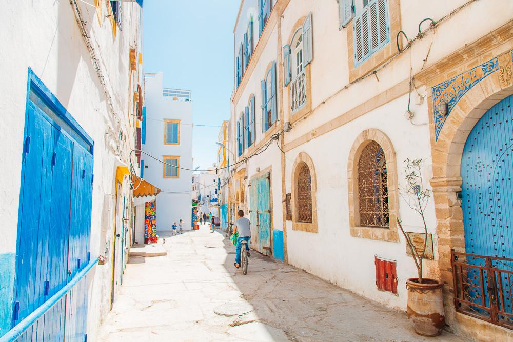
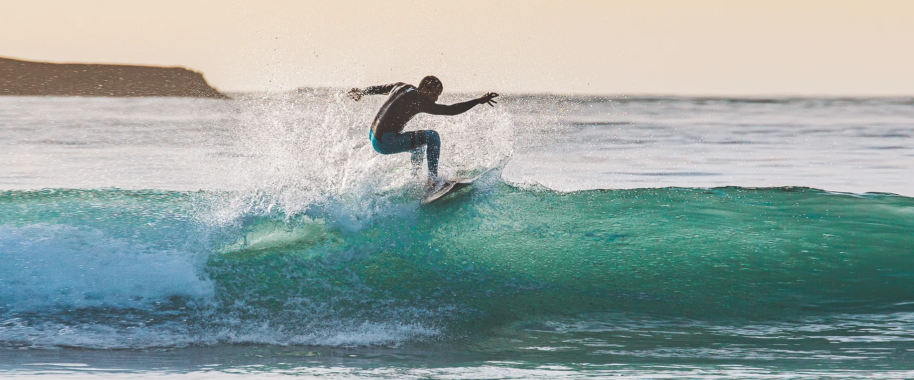
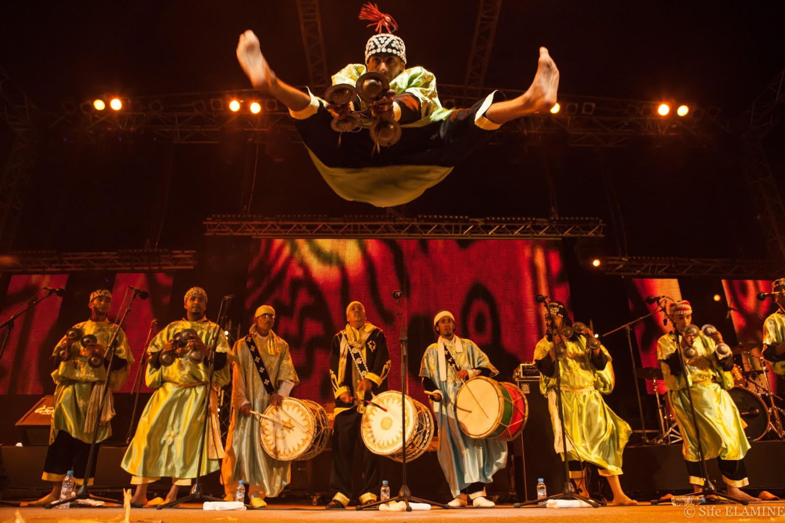
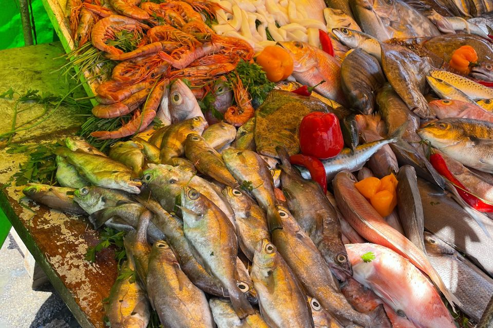
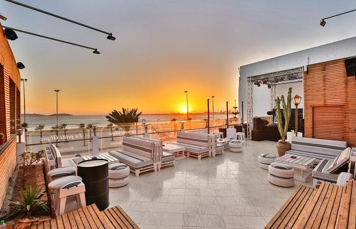

Essaouira is a coastal city in western Morocco known for its whitewashed walls, blue doors, and windswept beaches. It has a rich history, dating back to the 16th century, and is a popular tourist destination today.
-
Historical and Cultural Significance: Essaouira was a major port city for centuries, and its architecture reflects this history. The UNESCO World Heritage-listed Medina is a maze of narrow streets lined with traditional riads, mosques, and shops.

-

Beautiful Beaches and Surfing: Essaouira is a popular destination for surfers, thanks to its consistent winds and long, sandy beaches. The city's main beach, Moulay Hassan, is a popular spot for swimming, sunbathing, and relaxing.
-
Art and Culture: Essaouira is home to a vibrant art scene, with many galleries and art studios showcasing local artists' work. The city is also known for its music, particularly Gnawa music, a traditional Moroccan folk genre.

-

Food: Essaouira is a culinary paradise, offering a variety of fresh seafood, traditional Moroccan dishes, and international cuisine. The city is particularly known for its seafood, including grilled fish, sardines, and octopus.
-
Relaxing Atmosphere: Essaouira has a laid-back atmosphere, making it a perfect place to escape the hustle and bustle of Marrakech or other major Moroccan cities. The city is also known for its friendly locals and welcoming atmosphere.
